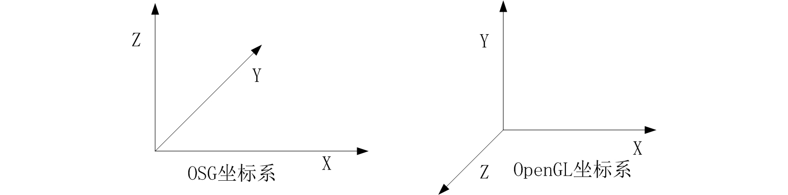

OSG学习笔记
OpenSceneGraph是一个开源3D图形应用程序编程接口，应用程序开发人员在诸如视觉模拟，计算机游戏，虚拟现实，科学可视化和建模等领域中使用该接口。
OSG 编译运行问题
OSG指出GL版本问题
CMake设置了GL3的开关，结果编译完后，好多例子无法正常运行。
原因：GL3对GL1、GL2不兼容
解决办法：去掉GL3选项
GL3(3.3)，属于OpenGL的高版本驱动所支持的接口，需要完全使用可编程管线.
不开启GL3设置，其实也可以使用GL3的特性，论坛作者提到osg使用了兼容模式，编写OpenGL3.3以上着色器，配置兼容模式即可使用。
获取OSG指出的OpengGL版本，可参考How to obtain OpenGL version from within OpenSceneGraph。
OSG运行的坑：WINGDIAPI（GL.h)
在VS运行OSG程序时，要将预处理器设置为WIN32，否则GL.h头文件会报错。
osg键盘事件不响应的解决方法
1、换输入法为英文状态
2、（若1不行）换键盘为美式键盘
osgQt键盘事件不响应的解决方法
OSG开发技巧
OpenGL中的功能与OSG对应功能
OSG 调试
打开cmd，输入如下命令：
1 | SET OSG_NOTIFY_LEVEL=DEBUG |
坐标系
OSG中采用的X轴正方向向右，Y轴正方向朝里，Z轴正方向向上。
OpenGL中采用的X轴正方向向右，Y轴正方向朝上，Z轴正方向朝外。

显示模型坐标轴
使用如下命令显示模型坐标轴：
1 | osgviewer cessna.osgt axes.osgt |
OSG相机默认视角
osg::Camare的默认姿态：
- 位置在 0,0,0
- 姿态是：向下看（Z轴负向 0,0,-1）
- 头向前（Y轴正向 0,1,0，也就是说相机是正着的）
OSG渲染状态管理
OpenGL是一个状态机，在OpenGL中如果设置一种状态（比如设置当前的绘制颜色：glColor，那么实际上是设置了OpenGL颜色绘制状态为某种颜色，如果后续没有调用glColor去修改颜色，那么之后所有绘制的对象都使用之前设置的颜色。），在没有修改它的时候，该状态就会一直保持。在OpenGL使用中的状态有以下两种方式：
仅仅通过glEnable和glDisable开启和关闭状态
这里面也有两种不同的取值：- 1.1 不涉及和其他状态相关，比如GL_DITHER、GL_POINT_SPRITE等；
- 1.2 涉及和其他状态的联动，比如GL_ALPHA_TEST、GL_BLEND等，需要使用glEnable开启状态
和1.2种的某种状态对应，但是需要设置状态的值（比如glAlphaFunc、glBlendFunc）
在OSG中对OpenGL的状态进行了封装，在OSG中称第一种情形为Mode（模式），称第二种情况为Attribute（属性），使用osg::StateAttribute来封装OpenGL的状态。
在OSG中涉及到状态管理的类有3个，分别是 osg::State， osg::StateSet， osg::StateAttribute。
OSG渲染
OSG可以使得绘制遍历，也就是将数据传送给OpenGL管线，在一个单独的线程中运行。他必须与每一帧中的其他绘制遍历相同步，但是绘制遍历的部分可以与来自下一帧的更新遍历相重叠，从而改善渲染效率并减少帧延迟。这意味着osgViewer::Viewer的frame()方法会在绘制工作依然处于活动状态时返回。那么更新回调中的数据变化也许会与未完成的渲染操作相冲突，从而导致不可预期的行为，甚至崩溃。
OSG在setDataVariance()方法中提供了解决方法，该方法属于osg::Object类，这是所有场景对象的基类。这可以设置为三个枚举值之一：UNSPECIFIED（默认），STATIC与DYNAMIC。场景图中的DYNAMIC对象必须在绘制遍历的开始进行处理。也就是，渲染后端应确保所有节点以及被指定为DYNAMIC的场景对象在下一帧的更新与裁剪遍历开始之前已完成绘制。然而，STATIC对象，在更新与绘制过程中会保持不变，从而会被稍后渲染且不会阻塞帧速率。
Object::DataVariance
要设置一个Object 对象的数据变量，可以调用setDataVariance()并设置输入参数为Object::DataVariance 枚举量。初始状态下，变度的值是UNSPECIFIED。用户程序可以将数据变度更改为STATIC 或者DYNAMIC。OSG 将确保绘制遍历在所有的DYNAMIC 节点和数据处理完成后才会返回。
场景数据动态更新的核心就是设置数据变度属性DataVariance，它决定了OSG在多线程渲染的过程中的执行策略：只有所有DYNAMIC属性的对象被渲染完毕之后，OSG才会开始执行下一帧的用户更新操作；这样有效地可以避免数据的过快更新造成当前的渲染动作出错，以致系统崩溃。
OSG绘制几何体
默认情况下，OSG使用顶点数组与显示列表来管理与渲染几何。然而，这会依据不同的数据类型与渲染策略而发生变化。
OSG矩阵相乘
OSG使用行向量与行为主矩阵在右侧原则（right-hand rule）下来执行前相乘（vectormatrix）。然而，OpenGL使用列为主矩阵与列向量来执行后相乘（matrixvector）。
OSG节点的增加,删除,隐藏和开关
osg::Switch 从osg::Group继承而来，是一个管理类，除了可以当成osg::Group使用外，它还可以控制子类的显示与隐藏, 这种隐藏是不耗费内存的，与 SetNodeMask对比有明显的优势，SetNodeMask只是隐藏了结点，但结点仍被绘制。
OSG纹理
osg::Texture2D类要求纹理坐标正规化为[0,1]，否则他会使用纹理封装来处理多余的部分。他会检测纹理的维度在尺寸上是否全部为2的幂次，例如64x64或256x512，并且在默认情况下会使用OpenGL的gluScaleImage()函数在内部缩放不是2的幂次的图像，这对于读取任意的图像非常方便，但是需要更多的系统时间并会占用较大的图形内存尺寸。
OSG状态
正常情况下，节点的状态集将会影响当前节点及其子节点。例如，节点transformation1的osg::PolygonMode属性将会使得其所有子节点显示为轮廓图。然而，子节点的状态集可以覆盖父节点的状态集，也就是，渲染状态将会由父节点继承，除非子节点改变这一行为。
非正常情况下，父节点可以使用osg::StateAttribute::OVERRIDE标记，以强制其所有的子节点继承其属性或模式。子节点也可以使用osg::StateAttribute::PROTECTED标记，来改变其继承性，从而会导致不同的结果。
OSG Viewer
osgViewer::View类是osgViewer::Viewer类的超类。他接受设置根节点作为场景数据，并添加相机操作器与事件处理器来使用用户事件。osgViewer::View与osgViewer::Viewer之间的区别在于前者不能被直接用作单个查看器，也就是，他没有run()或frame()方法。
1 | osgViewer::CompositeViewer multiviewer; |
OSG事件响应
OSG多个着色器
当OSG的父节点附加一个着色器，子节点附加另一个着色器会发生什么事情？
答案是子节点渲染时，其自身着色器会生效，而不会运行父节点着色器。
3D模型转换
osgconv是一种非常有用的的工具来读取标准的3D格式，如OpenFlight,3DS,Alias Wavefront
(OBJ) etc，并且可以将它们转换为一种OSG所支持的格式，如OSG中的ASCII格式的.osg，二进制格式的.ive。
在程序运行的默认情况下，优化导入的场景图，将形成的这样结果：场景图读取的数据量将会更少且速度会更
快。尤其值得指出的是，.ive格式的的文件，快速装载数据的能力使它非常适合数据页和大型的数据库。
使用方法如下：
1 | osgconv cow.obj cow.ive |
参考链接
- OpenSceneGraph,by wikipedia.
- OSG渲染引擎架构——整体认识,by wikipedia.
- OSG渲染状态管理,by csxiaoshui.
- OSG中的DataVariance,by codetd.
- OpenGL中的功能与OSG对应功能,by 南水之源.
- OpenGL——颜色混合 glBlendFunc函数,by Timidkid.
- OpenGL Display List学习,by Antplay.
- osg学习（五十二）加载的牛模型cow.osg没有纹理 黑色,by hankern.
- OSG仿真案例（4）——创建烟雾粒子效果,by rexinx.
- OSG中的DataVariance,by sunflower_cs.
- OSG渲染状态管理,by csxiaoshui.
- OpenSceneGraph plugin not included in Conan?,by stackoverflow.
- osg示例解析之osgparticle(1) ,by csxiaoshui.
- 欢迎来到OpenGL的世界,by learnopengl.
- OSG调试经验,by 醉逍遥_祥.
- OSG使用GLSL各个版本例子,by 封狼居胥_COU.
- OSG运行的坑：WINGDIAPI（GL.h),by lessssssss.
- OSG 3.6.3 版本编译一些问题,by longlongway2012.
- 01-01-osg下GL3环境搭建,by Longlongwaytogo.
- OSG报警特效学习总结 ,by JosephDcc.
- OSG 绘制Geometry使用,by jdq0603.
- OSG三维渲染引擎–OSG渲染引擎中坐标系,by 苏黎.
- How to obtain OpenGL version from within OpenSceneGraph,by Victoria Rudakova.
- OSG运行的坑：WINGDIAPI（GL.h),by lessssssss.
- OSG可绘制体Drawable,by csxiaoshui.
- OSG 渲染剖析 之 Geometry 的 VBO生成,by Night_Aurora.
- osg绘制四边形,by mob60475700473b.
- osg setRenderBinDetails 使用,by longlongway2012.
- ogs节点的增加,删除,隐藏和开关,by 先锋小牛.
- osg demo12 响应鼠标事件,by analyst_yuci.
- [osg-users] Multiple Shaders,by J. Brent Spears.
- OSG 中默认的 Shader,by 洛克人杰洛.
- osgconv使用指南(转),by 3D入魔.
- osg嵌入Qt后，键盘响应以及程序退出崩溃问题解决,by 程序开发园.
- OSG相机,by wb175208.